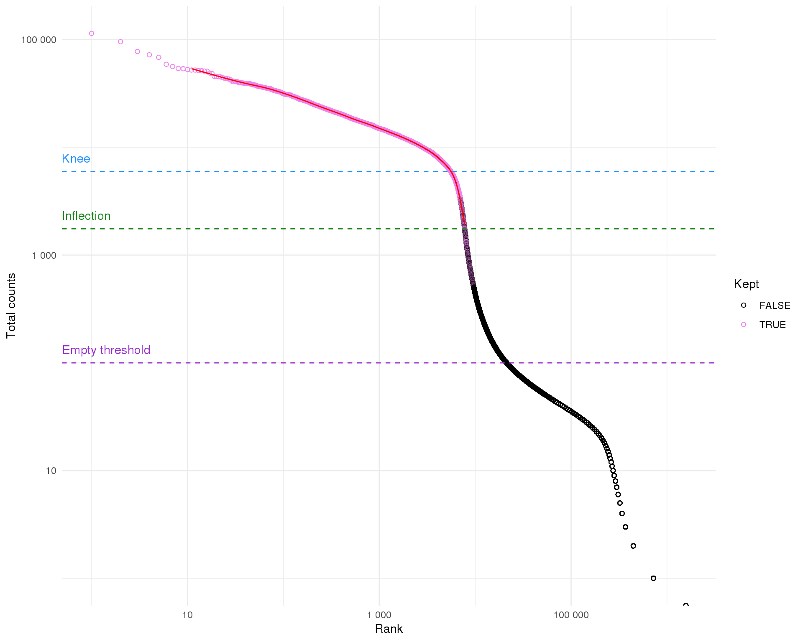
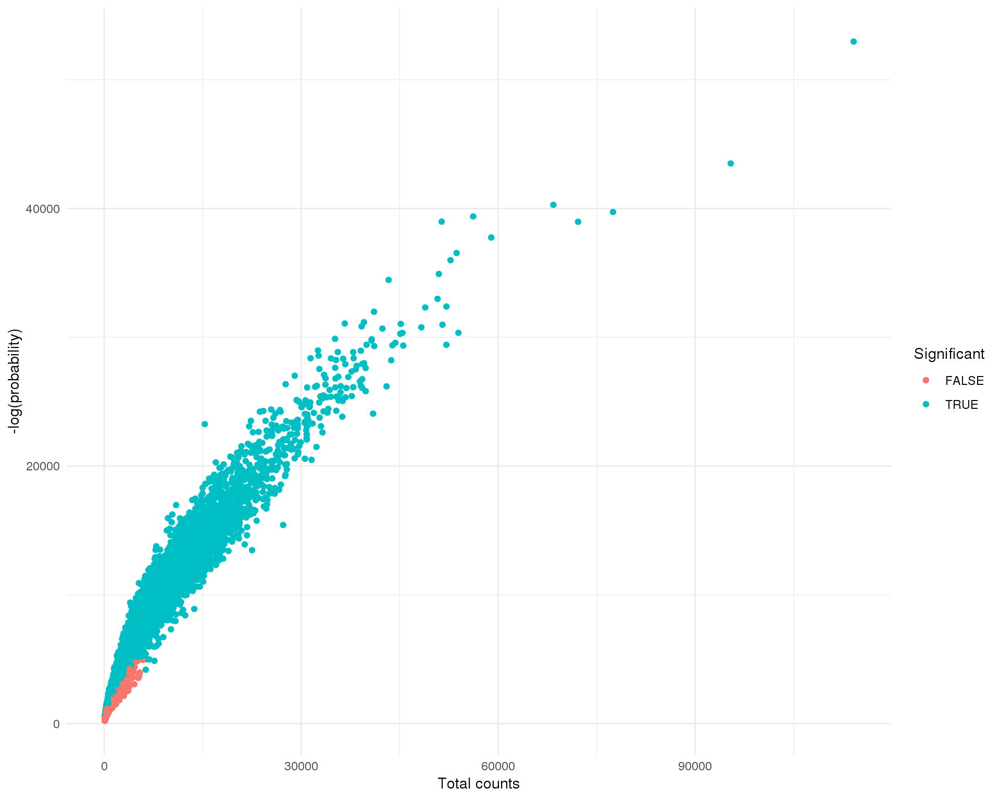
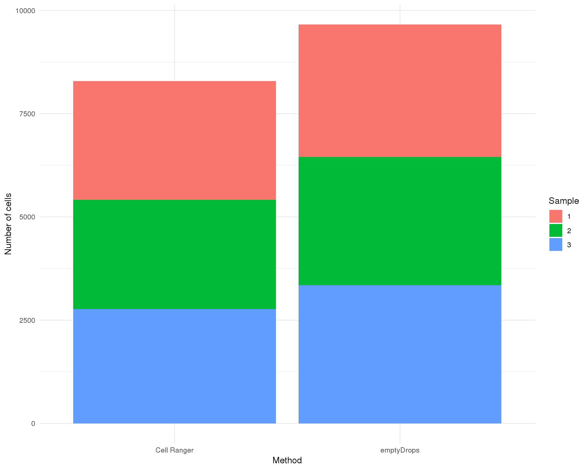
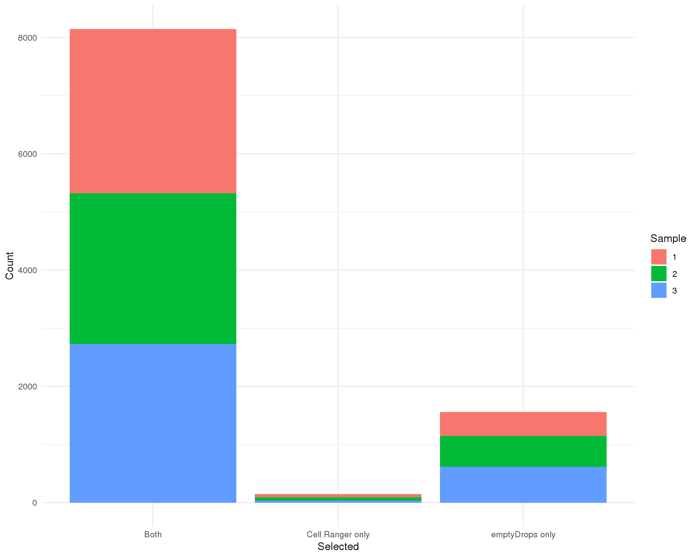

Last updated: 2019-01-18
workflowr checks: (Click a bullet for more information) ✔ R Markdown file: up-to-date
Great! Since the R Markdown file has been committed to the Git repository, you know the exact version of the code that produced these results.
✔ Environment: empty
Great job! The global environment was empty. Objects defined in the global environment can affect the analysis in your R Markdown file in unknown ways. For reproduciblity it’s best to always run the code in an empty environment.
✔ Seed:
set.seed(20190110)
The command set.seed(20190110) was run prior to running the code in the R Markdown file. Setting a seed ensures that any results that rely on randomness, e.g. subsampling or permutations, are reproducible.
✔ Session information: recorded
Great job! Recording the operating system, R version, and package versions is critical for reproducibility.
✔ Repository version: 5857378
wflow_publish or wflow_git_commit). workflowr only checks the R Markdown file, but you know if there are other scripts or data files that it depends on. Below is the status of the Git repository when the results were generated:
Ignored files:
Ignored: .Rproj.user/
Ignored: analysis/cache/
Ignored: data/
Ignored: packrat/lib-R/
Ignored: packrat/lib-ext/
Ignored: packrat/lib/
Ignored: packrat/src/
Untracked files:
Untracked: docs/figure/
Unstaged changes:
Deleted: R/README.md
| File | Version | Author | Date | Message |
|---|---|---|---|---|
| Rmd | 5857378 | Luke Zappia | 2019-01-18 | Add preprocessing |
# scRNA-seq
library("DropletUtils")
library("SingleCellExperiment")
# Tidyverse
library("tidyverse")source(here::here("R/load.R"))
source(here::here("R/annotate.R"))
source(here::here("R/output.R"))bpparam <- BiocParallel::MulticoreParam(workers = 10)In this document we are going to read in the unfiltered counts matrix produced by Cell Ranger and determine which of those droplets contain cells using the DropletUtils package.
path <- here::here("data/cellranger")
raw <- read10x(path, dataset = "Orgs123")
filt_barcodes <- readr::read_lines(file.path(path, "filtered_barcodes.tsv.gz"))
colData(raw)$CellRangerFilt <- paste(colData(raw)$Barcode,
colData(raw)$Sample, sep = "-") %in%
filt_barcodesThe raw dataset has 33538 features and 2211840 droplets.
empty_thresh <- 100
bc_ranks <- barcodeRanks(counts(raw), lower = empty_thresh)
colData(raw)$BarcodeRank <- bc_ranks$rank
colData(raw)$BarcodeTotal <- bc_ranks$total
colData(raw)$BarcodeFitted <- bc_ranks$fitted
bc_data <- colData(raw) %>%
as.data.frame() %>%
select(Cell, Kept = CellRangerFilt, Rank = BarcodeRank,
Total = BarcodeTotal, Fitted = BarcodeFitted) %>%
arrange(Rank)Let’s start by ordering the droplets according to their total counts and plotting this on a log scale. This let’s us see the distribution of total counts.
ggplot(bc_data, aes(x = Rank, y = Total)) +
geom_point(shape = 1, aes(colour = Kept)) +
geom_line(aes(y = Fitted), colour = "red") +
geom_hline(yintercept = bc_ranks$knee,
colour = "dodgerblue", linetype = "dashed") +
annotate("text", x = 0, y = bc_ranks$knee, label = "Knee",
colour = "dodgerblue", hjust = 0, vjust = -1) +
geom_hline(yintercept = bc_ranks$inflection,
colour = "forestgreen", linetype = "dashed") +
annotate("text", x = 0, y = bc_ranks$inflection, label = "Inflection",
colour = "forestgreen", hjust = 0, vjust = -1) +
geom_hline(yintercept = empty_thresh,
colour = "darkorchid", linetype = "dashed") +
annotate("text", x = 0, y = empty_thresh, label = "Empty threshold",
colour = "darkorchid", hjust = 0, vjust = -1) +
scale_x_log10(labels = scales::number) +
scale_y_log10(labels = scales::number) +
scale_colour_manual(values = c("black", "violet")) +
ylab("Total counts") +
theme_minimal()
This is typical of what we see for 10x experiment where there is a sharp drop off between droplets with lots of counts and those without many. The inflection and knee points are methods for identifying the transition between distributions. These are roughly associated with the cells selected by Cell Ranger The empty threshold line indicates the point at which we assume droplets must be empty (total counts <= 100).
We will now look at identifying which droplets to select using the emptyDrops method. This method tests whether the composition of a droplet is significantly different from the ambient RNA in the sample which is obtained by pooling the empty droplets. Droplets with very large counts are also automatically retained.
set.seed(1)
emp_iters <- 10000
emp_drops <- emptyDrops(counts(raw), lower = empty_thresh, niters = emp_iters,
BPPARAM = bpparam)emptyDrops calculates p-values using a permutation approach. Let’s check that we are usually a sufficient number of iterations. If there are any droplets that have non-significant p-values but are limited by the number of permuations the number should be increased.
emp_fdr <- 0.01
is_cell <- emp_drops$FDR <= emp_fdr
is_cell[is.na(is_cell)] <- FALSE
colData(raw)$EmpDropsLogProb <- emp_drops$LogProb
colData(raw)$EmpDropsPValue <- emp_drops$PValue
colData(raw)$EmpDropsLimited <- emp_drops$Limited
colData(raw)$EmpDropsFDR <- emp_drops$FDR
colData(raw)$EmpDropsFilt <- is_cell
table(Limited = emp_drops$Limited, Significant = is_cell) Significant
Limited FALSE TRUE
FALSE 11030 959
TRUE 0 9174We can plot the negative log-probability against the total counts to see which droplets emptyDrops has selected.
colData(raw) %>%
as.data.frame() %>%
filter(!is.na(EmpDropsFilt)) %>%
ggplot(aes(x = BarcodeTotal, y = -EmpDropsLogProb, colour = EmpDropsFilt)) +
geom_point() +
scale_colour_discrete(name = "Significant") +
xlab("Total counts") +
ylab("-log(probability)") +
theme_minimal()
There were 2190677 droplets with less than 100 counts which were used to make up the ambient RNA pool. Of the remaining 21163 droplets 10133 were found to have profiles significantly different from the ambient RNA and should contain cells.
Let’s quickly compare differences between the default we get from Cell Ranger and what we have got from using DropletUtils. First let’s look at the number of cells identified by each method.
colData(raw) %>%
as.data.frame() %>%
group_by(Sample) %>%
summarise(`Cell Ranger` = sum(CellRangerFilt),
emptyDrops = sum(EmpDropsFilt, na.rm = TRUE)) %>%
gather(key = Method, value = Total, -Sample) %>%
ggplot(aes(x = Method, y = Total, fill = Sample)) +
geom_col() +
ylab("Number of cells") +
theme_minimal()
From this plot we can see that emptyDrops has identified many more cells and that they seem to be evenly spread across the three samples. Well will also check to see that the methods are finding the same cells.
plot_data <- colData(raw) %>%
as.data.frame() %>%
mutate(`Cell Ranger only` = CellRangerFilt & !EmpDropsFilt,
`emptyDrops only` = !CellRangerFilt & EmpDropsFilt,
Both = CellRangerFilt & EmpDropsFilt) %>%
group_by(Sample) %>%
summarise(`Cell Ranger only` = sum(`Cell Ranger only`),
`emptyDrops only` = sum(`emptyDrops only`, na.rm = TRUE),
Both = sum(Both, na.rm = TRUE)) %>%
gather(key = Selected, value = Count, -Sample) %>%
mutate(Selected = factor(Selected,
levels = c("Both", "Cell Ranger only",
"emptyDrops only")))
ggplot(plot_data, aes(x = Selected, y = Count, fill = Sample)) +
geom_col() +
theme_minimal()
plot_data %>%
group_by(Selected) %>%
summarise(Total = sum(Count))Most cells are identified by both methods with emptyDrops identifying many more additional cells. There are only a few cells that are identified only by Cell Ranger. We will perform further quality control of cells so at this stage we will keep cells that are selected by either method.
selected <- raw[, colData(raw)$CellRangerFilt | colData(raw)$EmpDropsFilt]
colData(selected)$SelMethod <- "Both"
colData(selected)$SelMethod[!colData(selected)$CellRangerFilt] <- "emptyDrops"
colData(selected)$SelMethod[!colData(selected)$EmpDropsFilt] <- "CellRanger"Now that we have a dataset that just contains actual cells we will add some extra annotation. This includes downloading feature annotation from BioMart and assigning cell cycle stages using the cyclone function in the scran package as well as calculating a range of quality control metrics using scater.
selected <- annotateSCE(selected,
org = "human",
add_anno = TRUE,
host = "jul2018.archive.ensembl.org",
calc_qc = TRUE,
calc_cpm = TRUE,
cell_cycle = TRUE,
BPPARAM = bpparam)
glimpse(as.data.frame(colData(selected)))Observations: 10,237
Variables: 54
$ Cell <chr> "Cell74", "Cell10…
$ Dataset <chr> "Orgs123", "Orgs1…
$ Barcode <chr> "AAACCTGAGAGTACAT…
$ Sample <chr> "1", "1", "1", "1…
$ CellRangerFilt <lgl> TRUE, TRUE, FALSE…
$ BarcodeRank <dbl> 2281.5, 3193.5, 1…
$ BarcodeTotal <dbl> 11084, 9414, 114,…
$ BarcodeFitted <dbl> 11089.186, 9427.9…
$ EmpDropsLogProb <dbl> -11721.3989, -948…
$ EmpDropsPValue <dbl> 0.00009999, 0.000…
$ EmpDropsLimited <lgl> TRUE, TRUE, TRUE,…
$ EmpDropsFDR <dbl> 0.0000000000, 0.0…
$ EmpDropsFilt <lgl> TRUE, TRUE, TRUE,…
$ SelMethod <chr> "Both", "Both", "…
$ G1Score <dbl> 0.029, 0.395, 0.9…
$ SScore <dbl> 0.029, 0.395, 0.9…
$ G2MScore <dbl> 0.534, 0.090, 0.0…
$ CellCycle <chr> "G2M", "S", "G1",…
$ is_cell_control <lgl> FALSE, FALSE, FAL…
$ total_features_by_counts <int> 3193, 2663, 108, …
$ log10_total_features_by_counts <dbl> 3.504335, 3.42553…
$ total_counts <dbl> 11084, 9414, 114,…
$ log10_total_counts <dbl> 4.044736, 3.97382…
$ pct_counts_in_top_50_features <dbl> 31.07182, 33.8963…
$ pct_counts_in_top_100_features <dbl> 44.92061, 49.2033…
$ pct_counts_in_top_200_features <dbl> 55.37712, 59.6983…
$ pct_counts_in_top_500_features <dbl> 67.68315, 71.8398…
$ total_features_by_counts_endogenous <int> 3183, 2653, 108, …
$ log10_total_features_by_counts_endogenous <dbl> 3.502973, 3.42390…
$ total_counts_endogenous <dbl> 10647, 9142, 114,…
$ log10_total_counts_endogenous <dbl> 4.027268, 3.96108…
$ pct_counts_endogenous <dbl> 96.05738, 97.1106…
$ pct_counts_in_top_50_features_endogenous <dbl> 30.95708, 34.4891…
$ pct_counts_in_top_100_features_endogenous <dbl> 44.38809, 49.5077…
$ pct_counts_in_top_200_features_endogenous <dbl> 54.16549, 59.1227…
$ pct_counts_in_top_500_features_endogenous <dbl> 66.63849, 71.3301…
$ total_features_by_counts_feature_control <int> 10, 10, 0, 7, 10,…
$ log10_total_features_by_counts_feature_control <dbl> 1.0413927, 1.0413…
$ total_counts_feature_control <dbl> 437, 272, 0, 13, …
$ log10_total_counts_feature_control <dbl> 2.6414741, 2.4361…
$ pct_counts_feature_control <dbl> 3.9426200, 2.8893…
$ pct_counts_in_top_50_features_feature_control <dbl> 100, 100, NaN, 10…
$ pct_counts_in_top_100_features_feature_control <dbl> 100, 100, NaN, 10…
$ pct_counts_in_top_200_features_feature_control <dbl> 100, 100, NaN, 10…
$ pct_counts_in_top_500_features_feature_control <dbl> 100, 100, NaN, 10…
$ total_features_by_counts_MT <int> 10, 10, 0, 7, 10,…
$ log10_total_features_by_counts_MT <dbl> 1.0413927, 1.0413…
$ total_counts_MT <dbl> 437, 272, 0, 13, …
$ log10_total_counts_MT <dbl> 2.6414741, 2.4361…
$ pct_counts_MT <dbl> 3.9426200, 2.8893…
$ pct_counts_in_top_50_features_MT <dbl> 100, 100, NaN, 10…
$ pct_counts_in_top_100_features_MT <dbl> 100, 100, NaN, 10…
$ pct_counts_in_top_200_features_MT <dbl> 100, 100, NaN, 10…
$ pct_counts_in_top_500_features_MT <dbl> 100, 100, NaN, 10…glimpse(as.data.frame(rowData(selected)))Observations: 33,538
Variables: 20
$ ID <chr> "ENSG00000243485", "ENSG00000237613",…
$ Symbol <chr> "MIR1302-2HG", "FAM138A", "OR4F5", "A…
$ Type <chr> "Gene Expression", "Gene Expression",…
$ Name <chr> "MIR1302-2HG", "FAM138A", "OR4F5", "A…
$ ensembl_gene_id <chr> "ENSG00000243485", "ENSG00000237613",…
$ entrezgene <int> NA, NA, 79501, NA, NA, NA, NA, NA, 72…
$ external_gene_name <chr> "MIR1302-2HG", "FAM138A", "OR4F5", "A…
$ hgnc_symbol <chr> "MIR1302-2HG", "FAM138A", "OR4F5", ""…
$ chromosome_name <chr> "1", "1", "1", "1", "1", "1", "1", "1…
$ description <chr> "MIR1302-2 host gene", "family with s…
$ gene_biotype <chr> "lincRNA", "lincRNA", "protein_coding…
$ percentage_gene_gc_content <dbl> 48.84, 50.26, 32.06, 39.91, 48.75, 52…
$ is_feature_control <lgl> FALSE, FALSE, FALSE, FALSE, FALSE, FA…
$ is_feature_control_MT <lgl> FALSE, FALSE, FALSE, FALSE, FALSE, FA…
$ mean_counts <dbl> 0.0001953697, 0.0000000000, 0.0000000…
$ log10_mean_counts <dbl> 8.483971e-05, 0.000000e+00, 0.000000e…
$ n_cells_by_counts <int> 2, 0, 0, 11, 2, 0, 0, 0, 0, 0, 0, 0, …
$ pct_dropout_by_counts <dbl> 99.98046, 100.00000, 100.00000, 99.89…
$ total_counts <dbl> 2, 0, 0, 11, 2, 0, 0, 0, 0, 0, 0, 0, …
$ log10_total_counts <dbl> 0.4771213, 0.0000000, 0.0000000, 1.07…This table describes parameters used and set in this document.
params <- jsonlite::toJSON(list(
list(
Parameter = "empty_thresh",
Value = empty_thresh,
Description = "Droplets with less than this many counts are empty"
),
list(
Parameter = "emp_iters",
Value = emp_iters,
Description = "Number of iterations for emptyDrops p-values"
),
list(
Parameter = "emp_fdr",
Value = emp_fdr,
Description = "FDR cutoff for emptyDrops"
),
list(
Parameter = "n_cells",
Value = ncol(selected),
Description = "Number of cells selected"
)
), pretty = TRUE)
knitr::kable(jsonlite::fromJSON(params))| Parameter | Value | Description |
|---|---|---|
| empty_thresh | 100 | Droplets with less than this many counts are empty |
| emp_iters | 10000 | Number of iterations for emptyDrops p-values |
| emp_fdr | 0.01 | FDR cutoff for emptyDrops |
| n_cells | 10237 | Number of cells selected |
This table describes the output files produced by this document. Right click and Save Link As… to download the results.
write_rds(selected, here::here("data/processed/01-selected.Rds"))dir.create(here::here("output", DOCNAME), showWarnings = FALSE)
readr::write_lines(params, here::here("output", DOCNAME, "parameters.json"))
knitr::kable(data.frame(
File = c(
getDownloadLink("parameters.json", DOCNAME)
),
Description = c(
"Parameters set and used in this analysis"
)
))| File | Description |
|---|---|
| parameters.json | Parameters set and used in this analysis |
devtools::session_info()─ Session info ──────────────────────────────────────────────────────────
setting value
version R version 3.5.0 (2018-04-23)
os CentOS release 6.7 (Final)
system x86_64, linux-gnu
ui X11
language (EN)
collate en_US.UTF-8
ctype en_US.UTF-8
tz Australia/Melbourne
date 2019-01-18
─ Packages ──────────────────────────────────────────────────────────────
! package * version date lib source
assertthat 0.2.0 2017-04-11 [1] CRAN (R 3.5.0)
backports 1.1.3 2018-12-14 [1] CRAN (R 3.5.0)
bindr 0.1.1 2018-03-13 [1] CRAN (R 3.5.0)
bindrcpp 0.2.2 2018-03-29 [1] CRAN (R 3.5.0)
Biobase * 2.42.0 2018-10-30 [1] Bioconductor
BiocGenerics * 0.28.0 2018-10-30 [1] Bioconductor
BiocParallel * 1.16.5 2019-01-04 [1] Bioconductor
bitops 1.0-6 2013-08-17 [1] CRAN (R 3.5.0)
broom 0.5.1 2018-12-05 [1] CRAN (R 3.5.0)
callr 3.1.1 2018-12-21 [1] CRAN (R 3.5.0)
cellranger 1.1.0 2016-07-27 [1] CRAN (R 3.5.0)
cli 1.0.1 2018-09-25 [1] CRAN (R 3.5.0)
colorspace 1.4-0 2019-01-13 [1] CRAN (R 3.5.0)
crayon 1.3.4 2017-09-16 [1] CRAN (R 3.5.0)
DelayedArray * 0.8.0 2018-10-30 [1] Bioconductor
desc 1.2.0 2018-05-01 [1] CRAN (R 3.5.0)
devtools 2.0.1 2018-10-26 [1] CRAN (R 3.5.0)
digest 0.6.18 2018-10-10 [1] CRAN (R 3.5.0)
dplyr * 0.7.8 2018-11-10 [1] CRAN (R 3.5.0)
DropletUtils * 1.2.2 2019-01-04 [1] Bioconductor
edgeR 3.24.3 2019-01-02 [1] Bioconductor
evaluate 0.12 2018-10-09 [1] CRAN (R 3.5.0)
forcats * 0.3.0 2018-02-19 [1] CRAN (R 3.5.0)
fs 1.2.6 2018-08-23 [1] CRAN (R 3.5.0)
generics 0.0.2 2018-11-29 [1] CRAN (R 3.5.0)
GenomeInfoDb * 1.18.1 2018-11-12 [1] Bioconductor
GenomeInfoDbData 1.2.0 2019-01-15 [1] Bioconductor
GenomicRanges * 1.34.0 2018-10-30 [1] Bioconductor
ggplot2 * 3.1.0 2018-10-25 [1] CRAN (R 3.5.0)
git2r 0.24.0 2019-01-07 [1] CRAN (R 3.5.0)
glue 1.3.0 2018-07-17 [1] CRAN (R 3.5.0)
gtable 0.2.0 2016-02-26 [1] CRAN (R 3.5.0)
haven 2.0.0 2018-11-22 [1] CRAN (R 3.5.0)
HDF5Array 1.10.1 2018-12-05 [1] Bioconductor
here 0.1 2017-05-28 [1] CRAN (R 3.5.0)
hms 0.4.2 2018-03-10 [1] CRAN (R 3.5.0)
htmltools 0.3.6 2017-04-28 [1] CRAN (R 3.5.0)
httr 1.4.0 2018-12-11 [1] CRAN (R 3.5.0)
IRanges * 2.16.0 2018-10-30 [1] Bioconductor
jsonlite 1.6 2018-12-07 [1] CRAN (R 3.5.0)
knitr 1.21 2018-12-10 [1] CRAN (R 3.5.0)
P lattice 0.20-35 2017-03-25 [5] CRAN (R 3.5.0)
lazyeval 0.2.1 2017-10-29 [1] CRAN (R 3.5.0)
limma 3.38.3 2018-12-02 [1] Bioconductor
locfit 1.5-9.1 2013-04-20 [1] CRAN (R 3.5.0)
lubridate 1.7.4 2018-04-11 [1] CRAN (R 3.5.0)
magrittr 1.5 2014-11-22 [1] CRAN (R 3.5.0)
P Matrix 1.2-14 2018-04-09 [5] CRAN (R 3.5.0)
matrixStats * 0.54.0 2018-07-23 [1] CRAN (R 3.5.0)
memoise 1.1.0 2017-04-21 [1] CRAN (R 3.5.0)
modelr 0.1.2 2018-05-11 [1] CRAN (R 3.5.0)
munsell 0.5.0 2018-06-12 [1] CRAN (R 3.5.0)
P nlme 3.1-137 2018-04-07 [5] CRAN (R 3.5.0)
pillar 1.3.1 2018-12-15 [1] CRAN (R 3.5.0)
pkgbuild 1.0.2 2018-10-16 [1] CRAN (R 3.5.0)
pkgconfig 2.0.2 2018-08-16 [1] CRAN (R 3.5.0)
pkgload 1.0.2 2018-10-29 [1] CRAN (R 3.5.0)
plyr 1.8.4 2016-06-08 [1] CRAN (R 3.5.0)
prettyunits 1.0.2 2015-07-13 [1] CRAN (R 3.5.0)
processx 3.2.1 2018-12-05 [1] CRAN (R 3.5.0)
ps 1.3.0 2018-12-21 [1] CRAN (R 3.5.0)
purrr * 0.2.5 2018-05-29 [1] CRAN (R 3.5.0)
R.methodsS3 1.7.1 2016-02-16 [1] CRAN (R 3.5.0)
R.oo 1.22.0 2018-04-22 [1] CRAN (R 3.5.0)
R.utils 2.7.0 2018-08-27 [1] CRAN (R 3.5.0)
R6 2.3.0 2018-10-04 [1] CRAN (R 3.5.0)
Rcpp 1.0.0 2018-11-07 [1] CRAN (R 3.5.0)
RCurl 1.95-4.11 2018-07-15 [1] CRAN (R 3.5.0)
readr * 1.3.1 2018-12-21 [1] CRAN (R 3.5.0)
readxl 1.2.0 2018-12-19 [1] CRAN (R 3.5.0)
remotes 2.0.2 2018-10-30 [1] CRAN (R 3.5.0)
rhdf5 2.26.2 2019-01-02 [1] Bioconductor
Rhdf5lib 1.4.2 2018-12-03 [1] Bioconductor
rlang 0.3.1 2019-01-08 [1] CRAN (R 3.5.0)
rmarkdown 1.11 2018-12-08 [1] CRAN (R 3.5.0)
rprojroot 1.3-2 2018-01-03 [1] CRAN (R 3.5.0)
rstudioapi 0.9.0 2019-01-09 [1] CRAN (R 3.5.0)
rvest 0.3.2 2016-06-17 [1] CRAN (R 3.5.0)
S4Vectors * 0.20.1 2018-11-09 [1] Bioconductor
scales 1.0.0 2018-08-09 [1] CRAN (R 3.5.0)
sessioninfo 1.1.1 2018-11-05 [1] CRAN (R 3.5.0)
SingleCellExperiment * 1.4.1 2019-01-04 [1] Bioconductor
stringi 1.2.4 2018-07-20 [1] CRAN (R 3.5.0)
stringr * 1.3.1 2018-05-10 [1] CRAN (R 3.5.0)
SummarizedExperiment * 1.12.0 2018-10-30 [1] Bioconductor
testthat 2.0.0 2017-12-13 [5] CRAN (R 3.5.0)
tibble * 2.0.1 2019-01-12 [1] CRAN (R 3.5.0)
tidyr * 0.8.2 2018-10-28 [1] CRAN (R 3.5.0)
tidyselect 0.2.5 2018-10-11 [1] CRAN (R 3.5.0)
tidyverse * 1.2.1 2017-11-14 [1] CRAN (R 3.5.0)
usethis 1.4.0 2018-08-14 [1] CRAN (R 3.5.0)
whisker 0.3-2 2013-04-28 [1] CRAN (R 3.5.0)
withr 2.1.2 2018-03-15 [1] CRAN (R 3.5.0)
workflowr 1.1.1 2018-07-06 [1] CRAN (R 3.5.0)
xfun 0.4 2018-10-23 [1] CRAN (R 3.5.0)
xml2 1.2.0 2018-01-24 [1] CRAN (R 3.5.0)
XVector 0.22.0 2018-10-30 [1] Bioconductor
yaml 2.2.0 2018-07-25 [1] CRAN (R 3.5.0)
zlibbioc 1.28.0 2018-10-30 [1] Bioconductor
[1] /group/bioi1/luke/analysis/phd-thesis-analysis/packrat/lib/x86_64-pc-linux-gnu/3.5.0
[2] /group/bioi1/luke/analysis/phd-thesis-analysis/packrat/lib-ext/x86_64-pc-linux-gnu/3.5.0
[3] /group/bioi1/luke/analysis/phd-thesis-analysis/packrat/lib-R/x86_64-pc-linux-gnu/3.5.0
[4] /home/luke.zappia/R/x86_64-pc-linux-gnu-library/3.5
[5] /usr/local/installed/R/3.5.0/lib64/R/library
P ── Loaded and on-disk path mismatch.This reproducible R Markdown analysis was created with workflowr 1.1.1